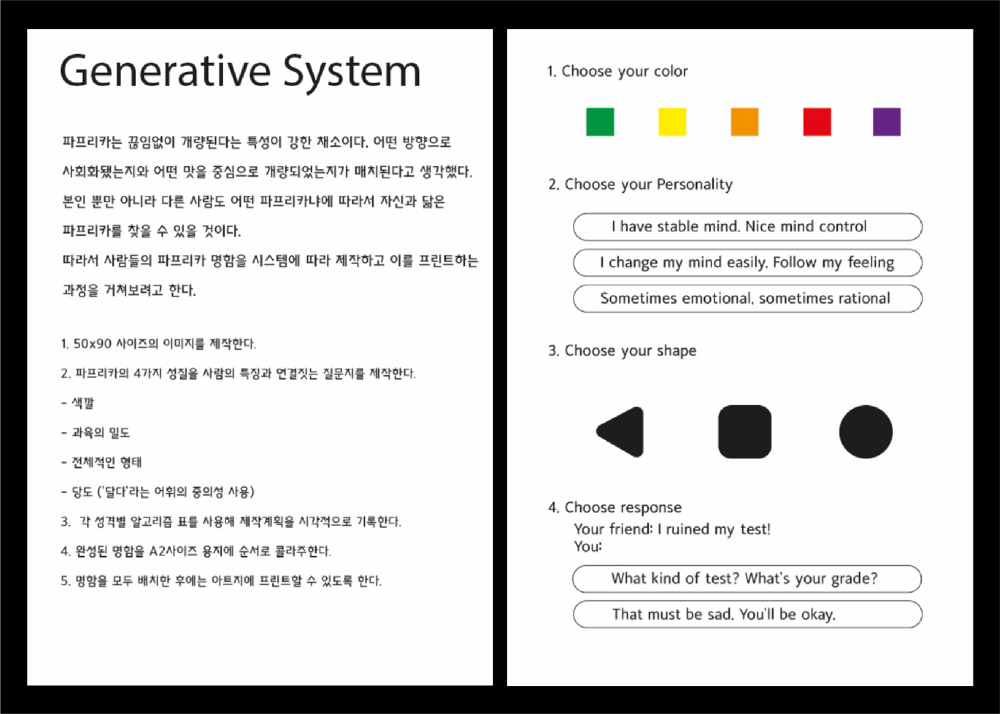
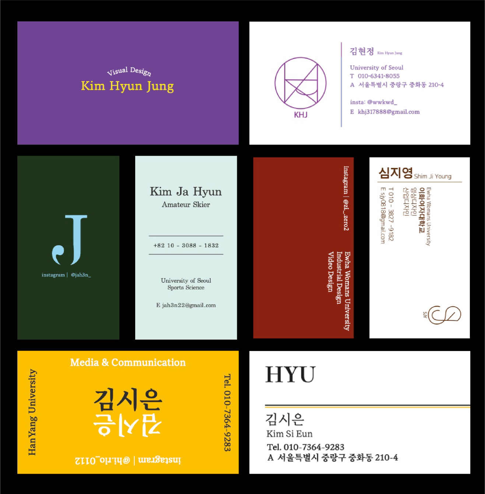
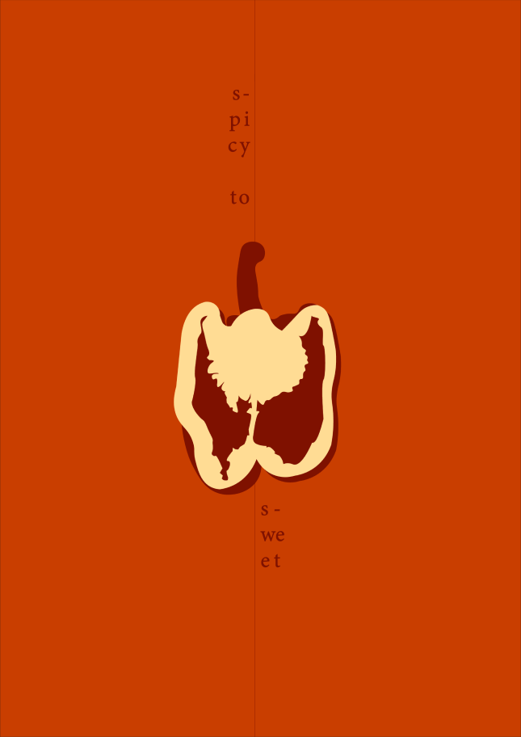
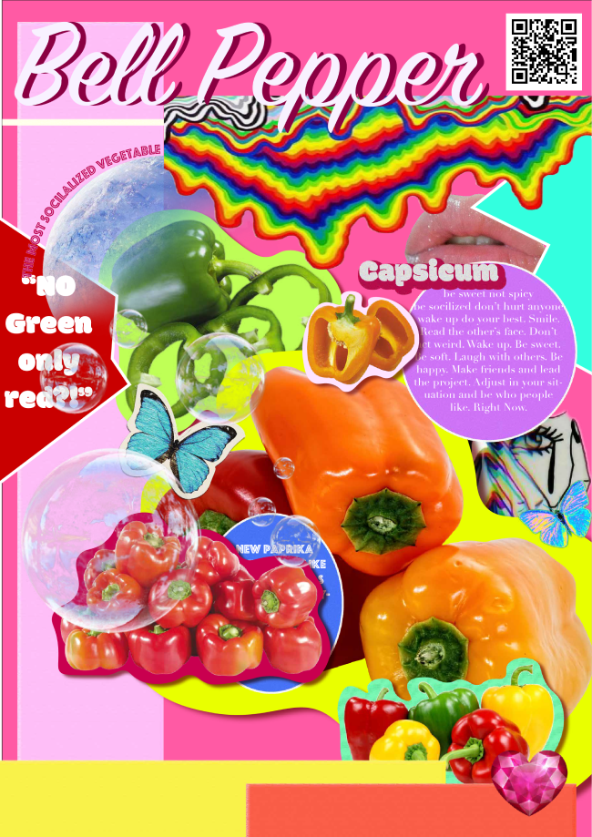

Project
Contact
khj317888@gmail.com
Designer
Vegetable
김현정
BE:L PEPPER
Category
Minimal Poster / Maximal Poster / Generative System
파프리카라는 야채를 관찰 대상으로 디자인을 진행한다. 파프리카의 형태 뿐만 아니라 역사적
특징까지 고려한 내용을 담아 이야기를 만들어나간다.
Spicy To Sweet
월간 파프리카
BELL CARD
Poster
Poster
Generative System
매운맛을 가지고 있었지만 사람들이 좋아하는 맛을 가지기 위해 끊임없는 개량을
거쳐 지금의 달달한 맛을 가진 파프리카를 사람의 사회화와 연결지어 디자인했다.
다양한 색깔을 가지고 끊임없이 바뀌는 파프리카의 출현을 잡지의 가십거리처럼
취급해 2000년대 가십잡지의 양식을 빌려 표현했다.



